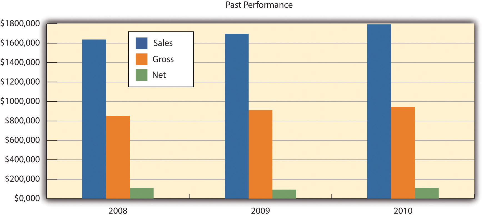
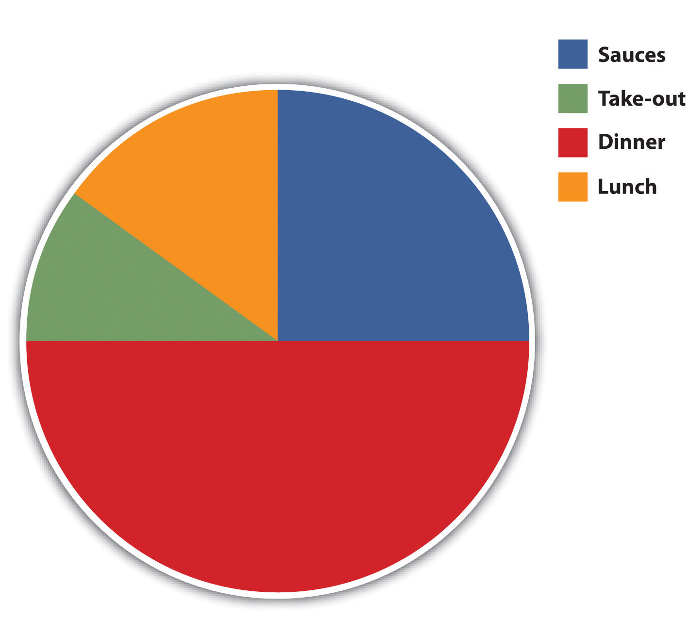
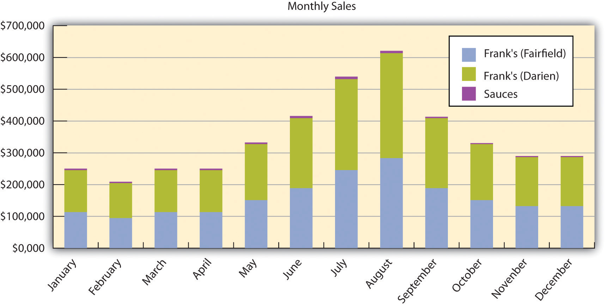
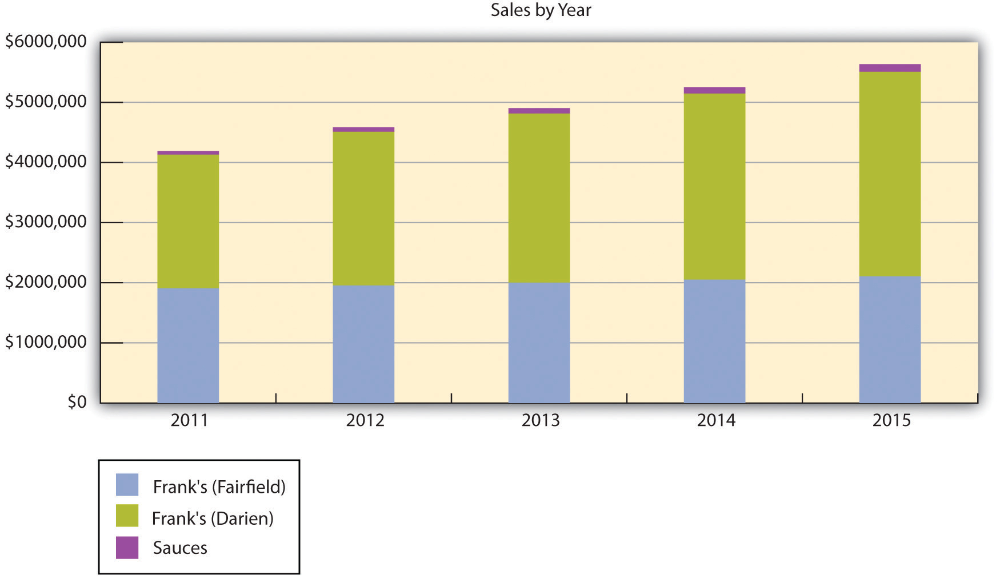
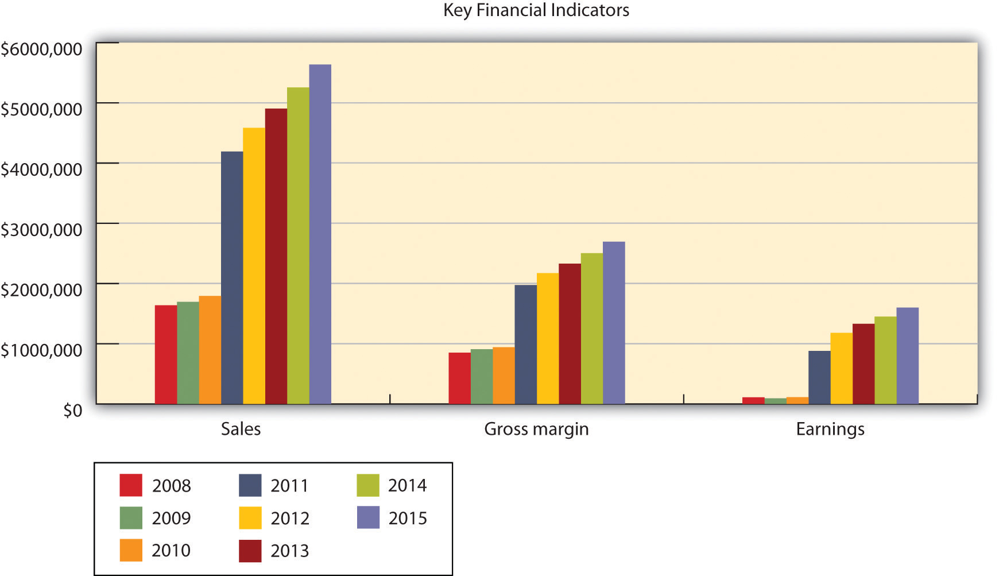
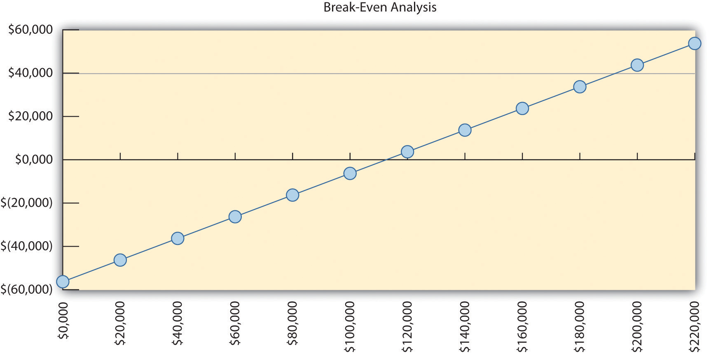
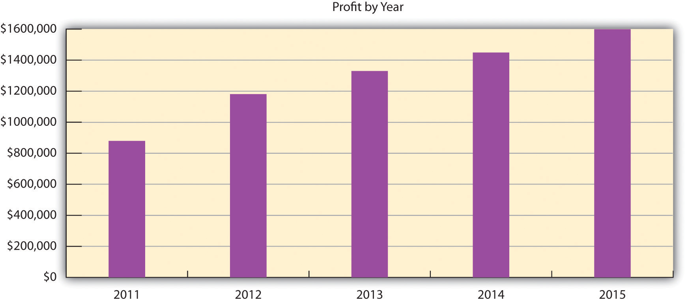

Frank’s All-American BarBeQue has operated for decades in the southern Connecticut shore region. With a tradition of superlative food at fair prices served in a family-friendly atmosphere, the owners now believe it is time to open a second restaurant and expand the production and the distribution of Frank’s signature barbecue sauces. This second restaurant will be in Darien, Connecticut, and will be nearly twice as large, in terms of seating capacity, as the current Fairfield restaurant. The company also plans to ramp up production of its sauces and increase their sales fourfold in the next three years.
The owners of Frank’s All-American BarBeQue and other investors plan to put $160,000 of their own money into the second restaurant and expand the production of the signature sauces. They seek to raise an addition $175,000 from a bank loan that will be repaid in two years.
To produce the best barbecue food in New England.
The mission of Frank’s All-American BarBeQue is to provide the southern Connecticut shore region with the finest barbecue food in four major regional styles at affordable prices in a family-friendly setting. As we grow, we will never forget and remain faithful to those factors that have made us a success.
Frank’s All-American BarBeQue has been in business for nearly forty years. It has weathered good times and bad times through all types of economic conditions. We have survived because Frank’s has remained committed to several principles.
Frank’s All-American BarBeQue has been a highly successful restaurant in Fairfield, Connecticut, for nearly forty years. It was started and is still managed by Frank Rainsford. Its food and sauces have won awards at both regional and national barbecue cook-offs. In addition, Frank’s has been voted the best barbecue establishment in Connecticut numerous times by many local newspapers and magazines.
The management team of Frank’s All-American BarBeQue has decided that now is the time to expand to an additional location. After careful analysis, a second Frank’s All-American BarBeQue can and should be opened in Darien, Connecticut. This restaurant will be larger and geared to better tap into the growing premade, take-home dinner market.
In the last few years, Frank’s has been selling its four signature barbecue sauces—Texan, Memphis, Kansas City, and Carolina—in local supermarkets. Although this represents a small portion of overall revenues, sales have been growing at a remarkable pace. This market must be exploited. Preliminary market research indicates that this segment of the business will grow at 20 percent per year for the next five years.
Presently, Frank’s All-American BarBeQue is a limited liability partnership with Frank Rainsford and his wife Betty as owners. Each has a 50 percent share in the business.
The plans for expansion will bring in capital from three other investors: Robert Rainsford, Susan Rainsford Rogers, and Alice Jacobs. Robert Rainsford and Susan Rainsford Rogers are the son and daughter of Frank and Betty. Both have extensive work experience at Frank’s. Alice Jacobs has been the restaurant’s accountant for over twenty years.
To assist the financing of the expansion, Robert Rainsford and Susan Rainsford Rogers will each invest $50,000, while Alice Jacobs will invest $60,000.
The new limited liability partnership will result in the investors holding the following equity percentages:
| Frank Rainsford | 40.00% |
| Betty Rainsford | 40.00% |
| Robert Rainsford | 6.25% |
| Susan Rainsford Rogers | 6.25% |
| Alice Jacobs | 7.50% |
Frank’s All-American BarBeQue was founded in 1972 by Frank Rainsford. Although a native New Englander, Frank learned about cooking barbecue while serving in the US Air Force. During his twelve years of service, he traveled across the country and learned about the four major styles of American barbecue—Texas, Memphis, Kansas City, and Carolina. His plan was to introduce people in southern Connecticut to real barbecue that entailed high-quality meats properly cooked and smoked over an appropriate length of time.
In the beginning, Frank’s All-American BarBeQue was a small facility; it could seat about thirty people. It was located near the Fairfield railroad station and was the first full-service barbecue restaurant in Fairfield. Frank’s placed an emphasis on featuring the food; it had a highly simplified decor where the tables were covered with butcher paper, not linen tablecloths. The restaurant was an immediate hit, received considerable local press, and won several food awards. This success enabled Frank’s to move to a larger facility in Fairfield on the town’s main thoroughfare—Boston Post Road. The new location was a midsize restaurant of about eighty seats. Frank has built this location into a relatively successful and locally well-known enterprise. It has been at the present location since the early 1980s. It shares a parking lot with several other stores in the small mall in which it is located.
Frank’s has won many awards at regional and national barbecue cook-offs (for both the food and the sauces), which is unusual for a barbecue business in New England. The restaurant has been written up, repeatedly, in the local and New York papers for the quality of its food and its four signature barbecue sauces. In the last few years, Frank’s has sold small lots of these sauces in local supermarkets. They have been distributed because of Frank’s personal connections with the store managers. Frank Rainsford has been approached by a major regional supermarket to sell his sauces. The supermarket is willing to find a facility that could produce Frank’s sauces in significantly larger volumes, which would represent a substantial increase in the sales of sauces. Table 16.1 "Past Performance of Frank’s All-American BarBeQue" provides a summary of key financial figures for the last three years—2008 to 2010. Figure 16.1 "Past Performance Chart" illustrates these key numbers for that period of time.
Table 16.1 Past Performance of Frank’s All-American BarBeQue
| Past Performance | 2008 | 2009 | 2010 |
| Sales | $1,637,610 | $1,696,564 | $1,793,268 |
| Gross margin | $851,557 | $909,358 | $943,259 |
| Gross margin % | 52.00% | 53.60% | 52.60% |
| Operating expenses | $542,080 | $577,315 | $600,408 |
| Inventory turnover | 13.20 | 12.10 | 12.90 |
| Balance Sheet | 2008 | 2009 | 2010 |
| Current Assets | |||
| Cash | $102,665 | $125,172 | $102,665 |
| Inventory | $391,238 | $331,045 | $345,678 |
| Other current assets | $278,372 | $230,074 | $278,372 |
| Total current assets | $772,275 | $686,291 | $726,715 |
| Long-Term Assets | |||
| Long-term assets | $504,580 | $388,820 | $423,675 |
| Accumulated depreciation | $180,856 | $135,739 | $145,765 |
| Total long-term assets | $323,724 | $253,081 | $277,910 |
| Total assets | $1,095,999 | $939,372 | $1,004,625 |
| Current Liabilities | |||
| Accounts payable | $155,534 | $132,206 | $145,321 |
| Current borrowing | $170,000 | $150,000 | $135,000 |
| Other current liabilities (interest free) | $81,888 | $63,972 | $74,329 |
| Total current liabilities | $407,422 | $346,178 | $354,650 |
| Long-term liabilities | $220,000 | $190,000 | $175,000 |
| Total liabilities | $627,422 | $536,178 | $529,650 |
| Paid-in capital | $75,000 | $75,000 | $75,000 |
| Retained earnings | $281,838 | $234,377 | $287,114 |
| Earnings | $111,739 | $93,817 | $112,861 |
| Total capital | $468,577 | $403,194 | $474,975 |
| Total capital and liabilities | $1,095,999 | $939,372 | $1,004,625 |
| Other Inputs | |||
| Payment Days | 30 | 30 | 30 |
Figure 16.1 Past Performance Chart
Frank’s All-American BarBeQue has been in Fairfield, Connecticut, for decades. It has a reputation throughout the southern Connecticut shore region for excellent food and has received numerous awards. The management team determined that a second location could tap into this local name recognition. Several towns in the region were evaluated for total population, population density, family income, and home value. These factors were considered because of their impact on generating traffic and consumers being able to pay for meals that are priced slightly higher than typical fast-food outlets. In addition, the average family size and the percentage of family households were considered because Frank’s is a family restaurant. Lastly, data were gathered on the average travel time to and from work for residents and the real estate tax rate. Because the new location of Frank’s will emphasize prepared meals, we felt that individuals with longer commutes would be more likely to order meals and pick them up at Frank’s. A summary of these data is provided in Table 16.2 "Demographic Data for Selected Connecticut Towns—Part 1" and Table 16.3 "Demographic Data for Selected Connecticut Towns—Part 2".
After thorough analysis, it was concluded that Darien, Connecticut, would be the best location for the new branch of Frank’s All-American BarBeQue. It has a high-income population and a high population density, and a large percentage of its inhabitants are members of family households. They have longer commuting times, which increase the potential need for prepared meals.
Table 16.2 Demographic Data for Selected Connecticut Towns—Part 1
| Item | Fairfield | Westport | Easton | Darien | Norwalk |
|---|---|---|---|---|---|
| Population | 57,578 | 25.884 | 7,383 | 19,375 | 83,802 |
| Population density | 1,917 | 1,293 | 269 | 1,508 | 3,675 |
| Income | $108,209 | $155,322 | $162,688 | $180,474 | $79,693 |
| House value | $589,179 | $1,169,081 | $868,622 | $1,430,589 | $504,100 |
| Percentage of family households | 72.6% | 74.6% | 84.3% | 81.7% | 64.1% |
| Travel time (minutes) | 31.3 | 39.4 | 34.8 | 36.4 | 25.4 |
| Real estate tax rate | 1.3% | 0.9% | 1.3% | 0.8% | 1.1% |
| Family size | 3.07 | 2.70 | 3.0 | 3.0 | 2.50 |
Table 16.3 Demographic Data for Selected Connecticut Towns—Part 2
| Item | Stamford | Weston | Wilton | Trumbull | State of Connecticut |
|---|---|---|---|---|---|
| Population | 121,026 | 10,199 | 17,771 | 34,422 | 3,574,097 |
| Population density | 3,206 | 515 | 659 | 478 | 739/sq. mile |
| Income | $81,206 | $190,080 | $183,252 | $103,019 | $68,595 |
| House value | $612,900 | $1,198,615 | $1,044,316 | $492,623 | $306,000 |
| Percentage of family households | 63.8% | 84.9% | 82.3% | 81.5% | 67.7% |
| Travel time (minutes) | 24.0 | 41.6 | 39.2 | 27.1 | |
| Real estate tax rate | 0.7% | 1.1% | 1.2% | 1.5% | 1.8% |
| Family size | 2.50 | 3.0 | 3.25 | 2.80 |
A specific location has been identified in Darien for the second Frank’s All-American BarBeQue. It is in a small mall and is large enough to have a seating capacity of 150–160 plus takeout facilities. The mall has more than adequate parking for future customers. The mall is located three blocks from the Metro-North Darien railroad station and is four blocks from the I-95 exit. It is therefore well positioned to attract traffic from both car and rail commuters. The lease fee for a three-year contract is very reasonable for a property of this size.
Frank’s All-American BarBeQue specializes in the finest barbecue served in a family-friendly format. It uses the finest cuts of meats that are free of any growth hormones. It is known for a variety of slow-smoked and slow-cooked meats, such as ribs, beef, pulled pork, and chicken. These are served with Frank’s famous and award-winning sauce varieties, which represent the four major styles of barbecue cooking. Frank’s is also noted for its side dishes and desserts.
Our goal is to expand operations to a second location in Darien, Connecticut. This outlet will be significantly larger and will have a section devoted to takeout meals.
There are approximately forty specialty barbecue restaurants in Connecticut. They are spread throughout the state, but only four (including Frank’s All-American BarBeQue) are in the southern shore region. The three competitors are smaller operations. None of the barbecue restaurants in Connecticut have the history, reputation, acclaim, or awards that match Frank’s All-American BarBeQue. It is not an exaggeration to say that Frank’s is the preeminent barbecue restaurant in Connecticut. It has a loyal following that reaches as far as New York City.
Frank’s is the only barbecue restaurant in Connecticut where supermarkets are vying for the right to market Frank’s signature barbecue sauces. This sideline business promises to be extremely profitable and support the overall marketing efforts for both locations of Frank’s All-American BarBeQue.
Frank’s All-American BarBeQue has always been committed to providing the absolute best in barbecue food. This has meant assuring the highest quality ingredients in food preparation. Frank has established a decades-long relationship with suppliers in the New York and Connecticut areas. He selects nothing but the choicest selections of beef, pork, and chicken. He has always made sure that his meats come from suppliers who are committed to quality ingredients and who never use growth hormones. This long-term relationship with a variety of key suppliers enables Frank to secure the best cuts at reasonable prices. Frank is equally careful in using the finest spices for his barbecue sauces. The same is true for all the side dishes that Frank’s All-American BarBeQue offers its customers.
This commitment to quality is not limited to the selection of meats and ingredients. Frank and his staff recognize that top-quality barbecue food requires a knowledgeable and deep commitment to cooking the food properly. All meats must be cooked and smoked slowly. This requires time, effort, expense, and commitment, but the results are spectacular. Some cuts of meat at Frank’s may require as many as eleven hours of preparation and cooking. Excellence is not achieved without a commitment to effort. This effort has been recognized with numerous awards at national barbecue cook-offs. Frank has clearly recognized that the meal is clearly a function of the quality of the meat, quality ingredients, and careful preparation.
Frank’s All-American BarBeQue is ready to accept new challenges. Opening a second restaurant will significantly increase sales, but the second location is only the beginning of new directions for Frank’s. Although Frank has been selling his regional barbecue sauces in local outlets for years, he is now ready to sign a contract with a major regional supermarket chain to market and sell these sauces throughout New England. Preliminary studies indicate that Frank can anticipate a 20 percent annual growth rate in the sales of sauces for the next five years.
With the growth of two-income families, less and less time is available to prepare meals at home. Recognizing this simple fact, Frank’s All-American BarBeQue plans to offer a variety of prepackaged barbecue meals that can be picked up at the restaurant and reheated at home. As part of its new commitment to a web-based presence, customers will be able to order these meals by regular phone, with smartphones, or through the Internet. Customers will be able to select from a list of prepackaged dinner meals or any combination of items. Customers can designate the time to pick up the meals, and the meals will be ready for them. This service promises significant revenue growth.
Since the 1930s, the American public has spent at least 5 percent of its disposable income on eating out. Even with annual fluctuations, this is a strong indicator of the viability of this industry. This can be best illustrated by reviewing industry results for the last few years.
Both 2009 and 2010 were difficult years for the restaurant industry. In 2008, sales increased by 3.8 percent. However, sales fell by nearly 0.75 percent in 2009. This was the first year in the history of the industry that sales actually declined. The restaurant industry’s sales in 2009 were $566 billion, down from over $570 billion. Prices rose by 2.2 percent in 2009. The increase in sales for 2010 was 0.5 percent, and price increases stabilized at 0.75 percent.
It is anticipated that there will be significant price competition in every segment of the restaurant industry. Some analysts argued that the poor performances for the restaurant industry in both 2009 and 2010 could be attributed to declines in both business and personal travel. Hotel occupancy rates in 2009 were down by nearly 10 percent. A study conducted by the National Restaurant Association argued that 20 percent of the sales in casual dining restaurants might be due to travelers and visitors. Frank’s All-American BarBeQue relies to a far lesser extent on travelers as customers. A rough estimate based on credit card receipts, for the period 2006–2010, indicated that travelers represented less than 2 percent of Frank’s sales. The pressure on the restaurant industry has been felt by many chain restaurants, which significantly curtailed their expansion plans.
Even though the recession was in full bloom in 2009, many food prices rose and rose significantly. Beef prices rose between 4 percent and 12 percent, while pork prices rose between 5 percent and 13 percent. Numerous studies have indicated that the increase in commodity prices will not be a transitory phenomenon.
With 925,000 food service locations in operation in the United States, this translates into 1 restaurant for every 330 Americans.
The health-care reform bill passed in 2010 should, in the near future, provide some relief for restaurants by creating a system that will assume greater responsibility by individuals to pay for their own health-care coverage.
Restaurants must also be much more cautious in the future about the possibility of hiring illegal aliens. As a whole, the National Restaurant Association supports immigration reform. However, it is concerned that any legislation should not limit a restaurant’s ability to hire workers. It is also concerned about the cost to assure worker eligibility.
The Mintel Group, a market research firm, found that consumers who are interested in quality opt for independent restaurants over chain outlets. An increasing consumer focus on health translates into an emphasis on natural ingredients. In the barbecue industry, this translates into naturally raised meats (i.e., the avoidance of artificial growth hormones in cattle), which are a hallmark of Frank’s All-American BarBeQue.
The National Restaurant Association estimated that sales in full-service restaurants in 2010 would exceed $184 billion—an increase of 1.2 percent from 2009 sales.
Several macroeconomic factors make opening a restaurant in Darien attractive, including the following:
Although 2010 was not a banner year for the restaurant industry—it was one where more restaurants closed than opened each month—there was one bright spot: Chain barbecue restaurants grew between 2 percent and 3 percent—an auspicious sign even for independent operators.
The home meal replacement market and the existing investment in restaurant equipment provide a nice growth opportunity for restaurants. It is been estimated that takeout sales in limited service chain restaurants might be as large as 60 percent of total sales. The same study found that takeout food has been growing twice as fast as the overall restaurant industry. Natural competitors in this market are supermarkets that offer prepackaged meals. However, we feel that few—if any—supermarkets provide the quality barbecue food that can be found at Frank’s.
Frank’s All-American BarBeQue views its major market segment as suburbanites in the south shore region of Connecticut. One way of further segmenting the market is by the type of meal being provided. Table 16.4 "Market Analysis" provides estimated growth rates for each type of meal (plus sauce sales) and projected number of meals (and jars of sauce) for the period 2011 to 2015. Figure 16.2 "Market Analysis" illustrates the relative contributions.
Table 16.4 Market Analysis
| Potential Customers | Growth | 2011 | 2012 | 2013 | 2014 | 2015 |
|---|---|---|---|---|---|---|
| Lunch | 8% | 17,000 | 18,275 | 19,646 | 21,119 | 22,703 |
| Dinner | 5% | 40,000 | 42,000 | 44,100 | 46,305 | 48,620 |
| Takeout | 20% | 10,000 | 12,000 | 14,400 | 17,280 | 20,736 |
| Sauces | 15% | 12,000 | 13,800 | 15,870 | 18,251 | 20,989 |
| Total | 9.37% | 79,000 | 86,075 | 94,016 | 102,955 | 113,048 |
Figure 16.2 Market Analysis
We believe that the market centers on excellent barbecue food served at reasonable prices and served in a family-friendly manner. We further believe that a growing segment of the market will want prepared meals that can be conveniently picked up and served at home. Table 16.4 "Market Analysis" provides a projected breakdown of the potential customers for the next five years. This breakdown is predicated on the type of meals served and includes the sale of sauces. We provide estimated growth rates and forecasted sale of meals (and bottles of sauces) for the period 2011 to 2015. Figure 16.2 "Market Analysis" shows the breakdown of the number of meals by type in 2015.
Presently, Frank’s All-American BarBeQue has a very simple website. The website provides minimal information—listing some of the menu items and the restaurant’s telephone number. It was created eight years ago by a college student who was working at Frank’s.
Robert Rainsford’s professional expertise is in the area of website development. After graduating from college, Robert was hired by a firm that specialized in developing web and social media presences for other companies. He worked for that firm in New York City for seven years. Robert rose rapidly through the company’s ranks, eventually becoming one of its vice presidents. His expertise in this area will enable Frank’s All-American BarBeQue to significantly enhance its web presence. Rather than just having a website that identifies the restaurant’s location and telephone number, along with a brief summary of its menu, the new website will be far richer in content and capability. It will provide a complete menu listing, identifying all items with corresponding images. The new website will enable customers to place orders through the Internet for lunch, dinner, or takeout items. The section devoted to takeout items will enable a customer to purchase prepared meals or choose from all items on the menu to develop a prepackaged meal. Customers will be able to identify the time that they will arrive for the pickup.
The website will have links to the Facebook and Twitter accounts of Frank’s All-American BarBeQue. These connections will enhance its social media presence. Customers will be asked to post comments about their dining experience and suggestions on how Frank’s can improve its operations and service. It will enable Frank’s to expand operations and still maintain the same close customer relationship that currently exists at the Fairfield restaurant.
The new web presence for Frank’s All-American BarBeQue will be geared to developing a new level of customer relationships. Customers at both restaurants will be asked to fill out forms where they will supply an e-mail address and a birthdate. (This information can also be supplied through Frank’s new website.) This information will enable Frank’s to keep customers informed of specials and offer coupons and the new rewards card program for special occasions, such as holidays or birthdays.
We view the website of Frank’s All-American BarBeQue as a major component of enhancing our relationship with our customers. It should provide convenience to customers through their ability to see what is on the menu, identify new specials, and order meals and pick them up at their convenience. The use of social media will expand awareness of Frank’s and enable it to develop closer relationships with present and future customers.
Robert Rainsford tapped into his expertise in social media and has already developed a far more sophisticated website for Frank’s All-American BarBeQue. He has secured the necessary server capacity to handle additional traffic on the website. In addition, he has set up several social media accounts for Frank’s All-American BarBeQue, including Facebook and Twitter. Robert also created a program linked to a database that will monitor customer purchases through the rewards card program. This program will send out birthday notices and discounts to customers and will inform them of their current status in the rewards card program.
Robert contacted several former colleagues at his former place of employment and has identified several candidates for the role of website manager. This individual will be responsible for updating the website and the social media sites on a daily basis. He or she will also be responsible for analyzing the flow of information that comes through these sites and preparing management reports.
The core strategy of Frank’s All-American BarBeQue is to continue what has made it a success at a new location. Simply put, our strategy is to provide our customers with the finest barbecue food in Connecticut, at reasonable prices, in a family-friendly environment. In addition, we hope to improve our ability to meet customer needs by making life more convenient for our customers. We believe that these fundamentals are universally applicable.
A strengths, weaknesses, opportunities, and threats (SWOT) analysis was undertaken for Frank’s All-American BarBeQue.
The key strength of Frank’s All-American BarBeQue is the quality of its food and service. It has been the recipient of numerous local and national awards for its foods and sauces. Other strengths include a highly knowledgeable management team with expertise in operating a barbecue restaurant, a close working relationship with suppliers of premier cuts of meats, and a loyal clientele in the south shore region.
The weaknesses associated with this business plan center on operating an additional restaurant with a much larger capacity than the Fairfield, Connecticut, restaurant. The second location will require an experienced restaurant manager. This plan calls for a significant increase in prepared (takeout) meals. Orders will be placed either by phone or through the website. Current personnel have little experience in ratcheting up the takeout portion of the business.
This business plan offers significant opportunities for Frank’s All-American BarBeQue. A second, larger location will translate into a significant increase in sales. Finalizing a business relationship with the regional supermarket chain will enable Frank’s to significantly increase the production and the sales of its signature sauces. The sales of sauces are expected to increase by 20 percent per year for the next five years.
Any expansion with the opening of a new location always entails some risk. The principals of Frank’s All-American BarBeQue will be investing a significant amount of capital and will be borrowing money from a bank to open a second location. It is strongly believed that the second location will capitalize on the success of the Fairfield restaurant and will become a success.
The competitive edge of Frank’s All-American BarBeQue resides mainly in the quality of its food and its commitment to serve the food in a family-friendly environment. The quality of its food is unmatched in the entire state. No other barbecue restaurant has received the awards and the accolades that Frank’s All-American BarBeQue has received for the past forty years. Its reputation for quality gives it an edge that no other barbecue restaurant or chain can match.
The target market for Frank’s All-American BarBeQue is essentially suburban families in the south shore region of Connecticut. These people appreciate the finest barbecue food at reasonable prices. It is expected that an important group within this target market will be families with two incomes whose busy schedules would make prepared meals a very attractive option. We further assume that this market is technically sophisticated and will appreciate the convenience of ordering these meals via the Internet.
A key component of the marketing strategy of Frank’s All-American BarBeQue is to use the Internet and technology to enhance the relationship with its customer base. Frank’s will use the website, Facebook, Twitter, and e-mails to inform customers of special food items or discounts based on holidays and customers’ birthdays. We intend to use the website as a mechanism to gain an improved insight into customer needs and wants.
Frank’s All-American BarBeQue will also initiate a rewards card program. Customers will sign up for the rewards card program either at the two locations or online. They can use this program every time they make a purchase either at the restaurants or online. After a set number of visits (seven), customers will be entitled to either discounts or free items. The rewards card program will enable Frank’s All-American BarBeQue to track customers’ buying patterns and anticipate the ways in which they can better serve their customers.
We provide a five-year forecast of the dollar value of sales broken down by the two restaurants and the sauces in Table 16.5 "Sales Forecast". Figure 16.3 "Monthly Sales for Two Restaurants and Sauces" illustrates a forecast for the breakdown of sales on monthly basis in 2011, and Figure 16.4 "Five-Year Forecast of Sales for Two Restaurants and Sauces" illustrates the breakdown of sales for the next five years.
Table 16.5 Sales Forecast
| Sales | 2011 | 2012 | 2013 | 2014 | 2015 |
| Frank’s (Fairfield) | $1,907,183 | $1,954,863 | $2,003,734 | $2,053,827 | $2,105,173 |
| Frank’s (Darien) | $2,222,000 | $2,555,300 | $2,810,830 | $3,091,913 | $3,401,104 |
| Sauces | $62,500 | $75,000 | $90,000 | $108,000 | $130,000 |
| Total sales | $4,191,683 | $4,585,163 | $4,904,564 | $5,253,740 | $5,636,277 |
| Direct Cost of Sales | 2011 | 2012 | 2013 | 2014 | 2015 |
| Frank’s (Fairfield) | $953,594 | $977,430 | $1,001,867 | $1,026,914 | $1,052,587 |
| Frank’s (Darien) | $1,111,000 | $1,277,650 | $1,405,415 | $1,545,957 | $1,700,552 |
| Sauces | $31,250 | $37,500 | $45,000 | $54,000 | $64,800 |
| Subtotal direct cost of sales | $2,095,844 | $2,292,580 | $2,452,282 | $2,626,871 | $2,817,939 |
Figure 16.3 Monthly Sales for Two Restaurants and Sauces
Figure 16.4 Five-Year Forecast of Sales for Two Restaurants and Sauces
Currently, Frank Rainsford is the CEO and chief operating officer of Frank’s All-American BarBeQue. He is also the restaurant manager at the Fairfield restaurant. During the week, his daughter (Susan Rainsford Rogers) often replaces Frank as the restaurant manager. The Fairfield restaurant has a full-time cook who operates under Frank’s supervision, and two other full-time employees function as waiters and waitresses. These full-time employees are supplemented by six part-time employees.
Under the new management structure, Frank Rainsford will hold the position of CEO. His wife, Betty Rainsford, will be designated the president and chief operating officer. Their daughter, Susan Rainsford Rogers, will be given the title vice president for operations. She will be responsible for the day-to-day operations of the Darien, Connecticut, restaurant. Robert Rainsford will have the title of vice president of marketing. He will be responsible for all marketing activities and the operation of the website. Alice Jacobs will be the vice president of finance and the comptroller of Frank’s All-American BarBeQue.
The new management structure of Frank’s All-American BarBeQue is a basic functional layout appropriate for this type of business and is shown in Figure 16.5 "Organizational Chart".
Figure 16.5 Organizational Chart

Table 16.6 "Forecasts of Personnel" is a five-year breakdown of the types and costs of personnel.
Table 16.6 Forecasts of Personnel
| Personnel Plan | 2011 | 2012 | 2013 | 2014 | 2015 |
|---|---|---|---|---|---|
| Cooks Personnel | |||||
| Cook (Fairfield) | $54,000 | $54,600 | $55,000 | $55,500 | $56,000 |
| Cook (Darien) | $66,000 | $66,000 | $66,500 | $67,000 | $67,500 |
| Subtotal | $120,000 | $120,600 | $121,500 | $122,500 | $123,500 |
| Servers Personnel | |||||
| Full-time servers (Fairfield) | $28,800 | $28,800 | $16,000 | $17,500 | $18,000 |
| Full-time servers (Darien) | $57,600 | $57,600 | $24,500 | $25,000 | $2,600 |
| Part-time servers both locations | $192,000 | $192,000 | $192,000 | $192,000 | $192,000 |
| Subtotal | $278,400 | $278,400 | $232,500 | $234,500 | $212,600 |
| General and Administrative Personnel | |||||
| Restaurant manager (Fairfield) | $42,000 | $42,000 | $43,000 | $43,500 | $44,000 |
| Restaurant manager (Darien) | $54,000 | $54,600 | $56,000 | $56,500 | $57,000 |
| Subtotal | $96,000 | $96,600 | $99,000 | $100,000 | $101,000 |
| Total people | 39 | 39 | 39 | 39 | 39 |
| Total payroll | $494,400 | $495,600 | $453,000 | $457,000 | $437,100 |
Frank’s All-American BarBeQue will be financing the creation of a second restaurant through a combination of private investment and a bank loan. The private investment will raise $160,000, and Frank’s will seek another $175,000 as a two-year loan. These funds will be used to pay for equipment and leasing expenses associated with opening a second restaurant.
The assumptions associated with the grow rates of sales each year for the next five years are the keys to the financial planning process. We began with very modest assumptions of 8 percent growth in lunch sales and 5 percent growth in dinner sales. We anticipate fairly vigorous growth in takeout meals (20 percent) and sauces (15 percent). Although these are large growth rates, we do not feel that they are unrealistic.
Figure 16.6 "Key Financial Indicators" provides historical (2008–2010) and forecasted (2011–2015) values for the key financial indicators.
Figure 16.6 Key Financial Indicators
In Table 16.7 "Breakeven Analysis" and Figure 16.7 "Breakeven Analysis", we show the results of our breakeven analysis for Frank’s All-American BarBeQue. The results indicate that with sales of approximately $110,000 each month, Frank’s All-American BarBeQue will break even.
Table 16.7 Breakeven Analysis
| Monthly revenue | $112,627 |
| Assumptions | |
| Average variable cost | 50% |
| Estimated monthly fixed cost | $56,313 |
Figure 16.7 Breakeven Analysis
Our analysis anticipates significant growth in profits in the next five years with the opening of a second Frank’s All-American BarBeQue in Darien. The profit margins should increase from in excess of $850,000 in 2011 to nearly $1,600,000 by 2015 and should be in excess of 20 percent for all five years. A complete analysis of the profit and loss statements is in Table 16.8 "Profit and Loss". The annual profits are illustrated in Figure 16.8 "Yearly Profits".
Table 16.8 Profit and Loss
| Pro Forma Profit and Loss | 2011 | 2012 | 2013 | 2014 | 2015 |
|---|---|---|---|---|---|
| Sales | $4,191,683 | $4,585,163 | $4,904,564 | $5,253,740 | $5,636,277 |
| Direct cost of sales | $2,095,844 | $2,292,580 | $2,452,282 | $2,626,871 | $2,817,939 |
| Cooks payroll | $120,000 | $120,600 | $121,500 | $122,500 | $123,500 |
| Other costs of sales | $0 | $0 | $0 | $0 | $0 |
| Total cost of sales | $2,215,844 | $2,413,180 | $2,573,782 | $2,749,371 | $2,941,439 |
| Gross margin | $1,975,839 | $2,171,983 | $2,330,782 | $2,504,369 | $2,694,838 |
| Gross margin % | 47.14% | 47.37% | 47.52% | 47.67% | 47.81% |
| Operating Expenses | |||||
| Servers payroll | $278,400 | $278,400 | $232,500 | $234,500 | $212,600 |
| Advertising/promotion | $0 | $0 | $0 | $0 | $0 |
| Other servers expenses | $0 | $0 | $0 | $0 | $0 |
| Total servers expenses | $278,400 | $278,400 | $232,500 | $234,500 | $212,600 |
| Servers % | 6.64% | 6.07% | 4.74% | 4.46% | 3.77% |
| General and Administrative Expenses | |||||
| General and administrative payroll | $96,000 | $96,600 | $99,000 | $100,000 | $101,000 |
| Marketing/promotion | $12,000 | $0 | $0 | $0 | $0 |
| Depreciation | $0 | $0 | $0 | $0 | $0 |
| Rent | $180,000 | $0 | $0 | $0 | $0 |
| Utilities | $13,200 | $0 | $0 | $0 | $0 |
| Insurance | $22,000 | $0 | $0 | $0 | $0 |
| Payroll taxes | $74,160 | $74,340 | $67,950 | $68,550 | $65,565 |
| Other general and administrative expenses | $0 | $0 | $0 | $0 | $0 |
| Total general and administrative expenses | $397,360 | $170,940 | $166,950 | $168,550 | $166,565 |
| General and administrative % | 9.48% | 3.73% | 3.40% | 3.21% | 2.96% |
| Other Expenses | |||||
| Other payroll | $0 | $0 | $0 | $0 | $0 |
| Consultants | $0 | $0 | $0 | $0 | $0 |
| Other expenses | $0 | $0 | $0 | $0 | $0 |
| Total other expenses | $0 | $0 | $0 | $0 | $0 |
| Other % | 0.00% | 0.00% | 0.00% | 0.00% | 0.00% |
| Total operating expenses | $675,760 | $449,340 | $399,450 | $403,050 | $379,165 |
| Profit before interest and taxes | $1,300,079 | $1,722,643 | $1,931,332 | $2,101,319 | $2,315,673 |
| EBITDA (Earnings Before Interest, Taxes, Depreciation, and Amortization) | $1,300,079 | $1,722,643 | $1,931,332 | $2,101,319 | $2,315,673 |
| Interest expense | $43,755 | $34,995 | $30,980 | $30,980 | $30,980 |
| Taxes incurred | $376,897 | $506,294 | $570,106 | $621,102 | $685,408 |
| Net profit | $879,427 | $1,181,354 | $1,330,246 | $1,449,237 | $1,599,285 |
| Net profit/sales | 20.98% | 25.76% | 27.12% | 27.58% | 28.37% |
Figure 16.8 Yearly Profits
Table 16.9 "Cash Flow Forecast" is a five-year forecast of cash flows for Frank’s All-American BarBeQue. The forecast shows extremely strong and positive cash flows for each year.
Table 16.9 Cash Flow Forecast
| Pro Forma Cash Flow | |||||
|---|---|---|---|---|---|
| Cash Received | 2011 | 2012 | 2013 | 2014 | 2015 |
| Cash from Operations | |||||
| Cash sales | $4,191,683 | $4,585,163 | $4,904,564 | $5,253,740 | $5,636,277 |
| Subtotal cash from operations | $4,191,683 | $4,585,163 | $4,904,564 | $5,253,740 | $5,636,277 |
| Subtotal cash received | $4,366,683 | $4,585,163 | $4,904,564 | $5,253,740 | $5,636,277 |
| Expenditures | 2011 | 2012 | 2013 | 2014 | 2015 |
| Expenditures from Operations | |||||
| Cash spending | $494,400 | $495,600 | $453,000 | $457,000 | $437,100 |
| Bill payments | $2,500,504 | $2,911,392 | $3,085,406 | $3,338,682 | $3,587,794 |
| Subtotal spent on operations | $2,994,904 | $3,406,992 | $3,538,406 | $3,795,682 | $4,024,894 |
| Other liabilities principal repayment | $54,000 | $54,000 | $54,000 | $0 | $0 |
| Long-term liabilities principal repayment | $87,600 | $87,600 | $0 | $0 | $0 |
| Subtotal cash spent | $3,296,504 | $3,548,592 | $3,592,406 | $3,795,682 | $4,024,894 |
| Net cash flow | $1,070,179 | $1,036,571 | $1,312,158 | $1,458,058 | $1,611,383 |
| Cash balance | $1,172,844 | $2,209,415 | $3,521,573 | $4,979,631 | $6,591,014 |
Table 16.10 "Balance Sheet Forecast" is a balance sheet forecast for Frank’s All-American BarBeQue.
Table 16.10 Balance Sheet Forecast
| Pro Forma Cash Flow | |||||
|---|---|---|---|---|---|
| Assets | 2011 | 2012 | 2013 | 2014 | 2015 |
| Current Assets | |||||
| Cash | $1,172,844 | $2,209,415 | $3,521,573 | $4,979,631 | $6,591,014 |
| Inventory | $72,421 | $79,197 | $109,296 | $117,245 | $125,954 |
| Other current assets | $278,372 | $278,372 | $278,372 | $278,372 | $278,372 |
| Total current assets | $1,523,636 | $2,566,983 | $3,909,241 | $5,375,249 | $6,995,341 |
| Long-Term Assets | |||||
| Long-term assets | $583,675 | $583,675 | $583,675 | $583,675 | $583,675 |
| Accumulated depreciation | $145,765 | $145,765 | $145,765 | $145,765 | $145,765 |
| Total long-term assets | $437,910 | $437,910 | $437,910 | $437,910 | $437,910 |
| Total assets | $1,961,546 | $3,004,893 | $4,347,151 | $5,813,159 | $7,433,251 |
| Liabilities and Capital | 2011 | 2012 | 2013 | 2014 | 2015 |
| Current Liabilities | |||||
| Accounts payable | $189,416 | $193,009 | $259,021 | $275,791 | $296,597 |
| Current borrowing | $135,000 | $135,000 | $135,000 | $135,000 | $135,000 |
| Other current liabilities | $20,329 | ($33,671) | ($87,671) | ($87,671) | ($87,671) |
| Subtotal current liabilities | $344,745 | $294,338 | $306,350 | $323,120 | $343,926 |
| Long-term liabilities | $262,400 | $174,800 | $174,800 | $174,800 | $174,800 |
| Total liabilities | $607,145 | $469,138 | $481,150 | $497,920 | $518,726 |
| Paid-in capital | $75,000 | $75,000 | $75,000 | $75,000 | $75,000 |
| Retained earnings | $399,975 | $1,279,402 | $2,460,755 | $3,791,002 | $5,240,239 |
| Earnings | $879,427 | $1,181,354 | $1,330,246 | $1,449,237 | $1,599,285 |
| Total capital | $1,354,402 | $2,535,755 | $3,866,002 | $5,315,239 | $6,914,524 |
| Total liabilities and capital | $1,961,546 | $3,004,893 | $4,347,151 | $5,813,159 | $7,433,251 |
| Net worth | $1,354,402 | $2,535,755 | $3,866,002 | $5,315,239 | $6,914,524 |
These figures clearly demonstrate that the proposed opening of a second restaurant is more than economically viable; it is an extremely lucrative project that promises to increase the net worth of the firm by 500 percent in five years.